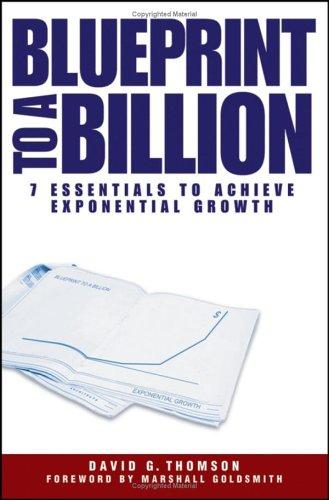

大卫·汤姆森（David G. Thomson）曾在惠普和北电网络（Nortel Networks）担任高管职务，后以副合伙人身份在麦肯锡工作五年，此后创立Blueprint Growth Institute，专注于为企业提供增长战略咨询。《十亿蓝图：实现指数级增长的七大要素》出版于2006年，由约翰·威利出版社（John Wiley & Sons）发行，并由管理学大师马歇尔·戈德史密斯（Marshall Goldsmith）撰写序言。本书的出发点是一个颇具挑战性的研究问题：自1980年以来，在美国进行IPO的数千家公司中，究竟哪些公司实现了从初创到年营收十亿美元的跨越，它们之间是否存在可复制的共同模式？汤姆森历时三年，对387家成功突破十亿美元营收门槛的公司（他称之为“蓝图公司”）进行了系统性的数据挖掘和案例研究。
汤姆森的核心发现，是这387家公司在跨越增长鸿沟的过程中，都表现出七个共同要素。其一，突破性的价值主张——这些公司无一例外地在各自领域开创或重新定义了一个细分市场，而非简单跟随现有竞争格局；汤姆森将其分为三类：开创新世界的颠覆者（如微软）、重塑细分市场的利基主导者（如Staples）、以及颠覆行业规则的品类终结者（如耐克）。其二，大客户的早期信任——在规模化之前，一批具有影响力的大客户愿意与其共同定义产品，这种背书为后续增长提供了信用背书和参照样本。其三，极具杀伤力的销售网络——蓝图公司普遍在早期就建立起独特而高效的分销和销售体系，将产品快速铺开。其余四个要素涵盖管理层能力跃升、董事会构成的战略价值、自由现金流的节点管理，以及收购与合作的杠杆运用。
本书的独特价值在于其量化基础。不同于大多数商业畅销书依赖于若干精选案例的叙事式论证，汤姆森对387家公司的统计分析赋予了结论相当的说服力。书中既有对微软、谷歌、eBay、星巴克、基因泰克（Genentech）等标志性公司增长路径的详细拆解，也有对失败案例的比较分析。他还特别指出，这七个要素不依赖于特定的经济周期或行业背景——无论是科技牛市还是经济衰退时期，成功实现十亿美元跨越的公司都呈现出相同的结构性特征。这使得本书对于创业者、成长期企业的管理层和风险投资者，都具有超出单一时代背景的参考意义。
来自Morgan Stanley的大卫·达尔斯特（David M. Darst）称本书为“一部精彩的著作，能够激励、赋能和启迪创业者、投资人和政策制定者”。Tractor Supply Company董事会主席乔·斯卡利特（Joe Scarlett）评价其为“一项令人着迷的接地气研究，涵盖战略、增长、领导力与团队建设的精髓”。本书出版后成为北美商学院MBA课程的辅助读物，并在创投和PE圈广泛流传。目前尚无官方授权中文版，读者可参考英文原版的数据分析框架，结合中国互联网和消费行业的增长案例加以对照理解。